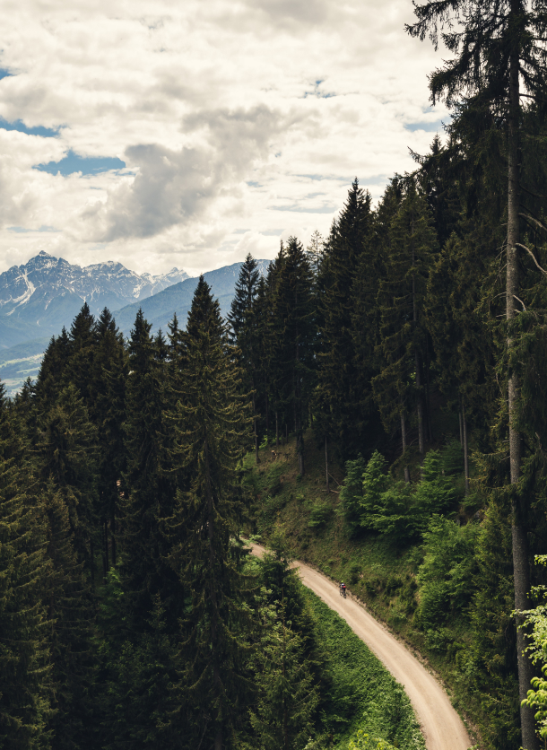

Триатлонные старты, горные серпантины или грейвел заезды по живописным маршрутам — нужно
только определиться с выбором велосипеда и отправиться в путь.
Cannondale Systemsix

«Катайся много или мало, долго или коротко, как хочешь —
но катайся»
Эдди Меркс
Велогонщик
Шоссе
На шоссейном велосипеде можно ездить по асфальту на разных градиентах: будь то горы
или
равнины. Гонки проходят в командном пелотоне, но тренироваться можно и самостоятельно.
Грэвел
Грэвел похож на шоссейный велосипед, но конструкция рамы немного отличается, и на нём
стоят более широкие покрышки, всё для того чтобы проехать по лёгкому бездорожью.
ТТ
ТТ — это велосипед для триатлона или раздельного старта, гооняют на таком велике только
по равнинному асфальту, велик очень быстрые и аэродинамичный.